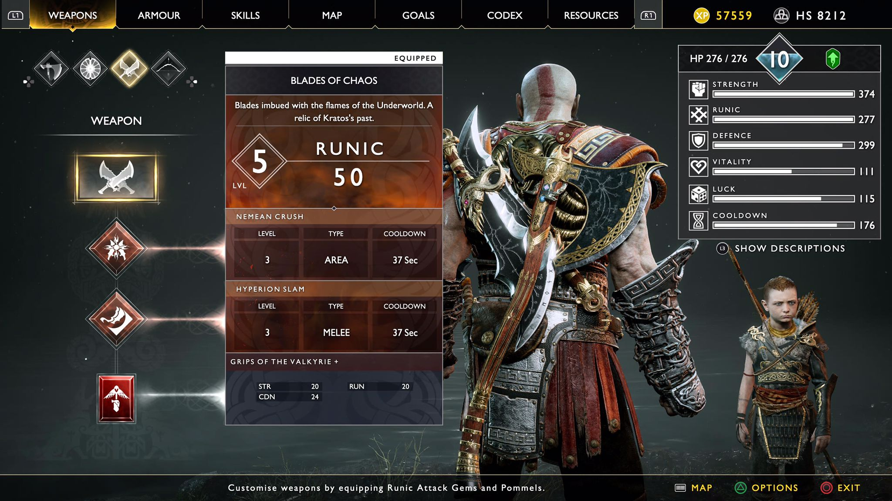

How to defeat Sigrun on difficulty: Give Me God of War
Hello!!! This guide will show you how to fight Sigrun the Queen of the Valkyreis on Give Me God of War.
Sigrun is an optional boss on God of War, she is known to be the hardest boss in the game. On normal difficulty she is really difficult to fight against, but on the hardest difficulty "Give Me God of War" she is extremely challenging.
This boss is unlocked after defeating all 8 Valkyries located all over the realms. Once all the Valkyries are defeated Sigrun can be found in the Council of Valkyreis in Midgard.
Before you start fighting Sigrun it would be best to have all armor and weapons upgraded
Weapons
So for the Leviathon Axe the light runic that will be used is "Wrath of the Frost Ancient" and for the heavy runic "Glaive Storm" will be used. The axe pommel "Forbidden Grip of the Ages +" will be equiped.
For the Blades of Chaos for the light runic "Nemean Crush" and for heavy runic "Hyperion Slam" will be used. "Grip of the Valkyrei +" is the blade pommel used.
Lastly, "Talisman of the Realms +" is used having it upgraded to lvl 9 will allow 3 extra enchantment slots.
Armor
For the armor "Cuirass of Ares", "Gauntlets of Zeus", and "War Belt of Zeus" will be used, (the enchantments equiped are shown on the pictures below).
Ares armor set can be found as you progress through the story, equipping the whole armour set will reduce the rage bar by a lot.
The Zeus armor is found by defeating certain Valkyries, "War Belt of Zeus" is found by defeating Hildr, the Valkyrie of Niflheim, "Gauntlets of Zeus" is found by defeating Gondul, the Valkyrie of Muspelheim, and laslty "Cuirass of Zeus" found by defeating Sigrun, Queen of the Valkyries. This armor set is one of the strongest armor, however, if attacked once will result in instant defeat.
Both these armor sets can only be found in new game plus.
The Fight
Hope this guide helps :)